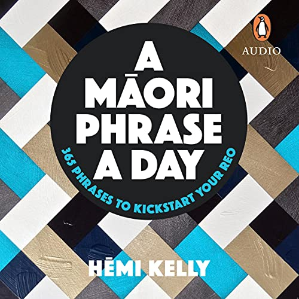
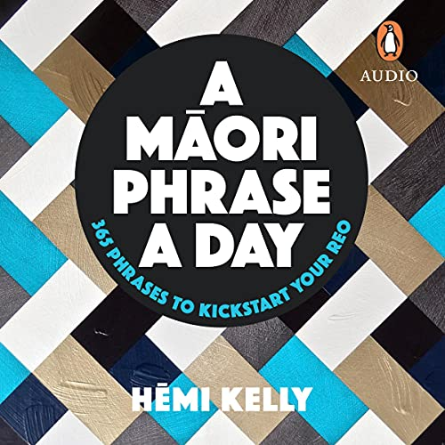

Kiā orā Aoteāroā - Welcome to Auckland Library
Kiā orā Aoteāroā - Welcome to Auckland LibraryRegistered Maori Library Books
 

- Maori Made Easy written by Scotty Morrison
- How Maui slowed the sun written by Peter Gossage
- My First words in Maori by Stacy Morrison
- A Maori Phrase a day by Hemi Kelly
- Myths and legends by Phillip Wilkinson
- Dr Hinemoa Elder - Aroha by Dr Hinemoa Elder
Registered Books
- Weaving for kids - Find out the names for different forms of weaving and the steps to creating a piece of weaving.
- A Whāriki for Parklands Library - Christchurch City Libraries celebrated Matariki 2005 by weaving a whāriki using harakeke.
- Te Manu Tukutuku — the Māori kite - Manu is the word for bird and kite, and tukutuku refers to the winding out of the line as the kite climbs.
- Pūawaitanga o te Ringa — Fruits of our busy hands - About the series of tukutuku panels that were specially woven as a community project for the Ngā Pounamu Māori Centre in 2001. Includes information about tukutuku weaving, the specific designs used and their meanings.
- Weaving art and lives together - An interview with Paula Rigby, skilled harakeke weaver.
- Janet Stewart Reserve - The Janet Stewart Reserve is a place in Otautahi Christchurch where weavers can gather harakeke for weaving. Our page includes recorded interviews with Ranui Ngarimu, chair of the national weavers collective Te Rōpū Raranga Whatu O Aotearoa at that time (June 2005), and Christine Heremaia who has been extensively involved in the establishment of the reserve.
Materials

|

|
|
|---|---|---|

|
Popular Literature
| Book Name | Author | Year | Rank | Status |
|---|---|---|---|---|
| Maori Made Easy | Scotty Morrison | 2010 | #1 | Online | How Maui slowed the sun | Peter Gossage | 2012 | #2 | Online / Library |
| My First Words in Maori | Shawn Morrison | 2011 | #3 | Online / AudioBook |
| A Maori phrase a day | Hemi Kelly | 2009 | #4 | Library |